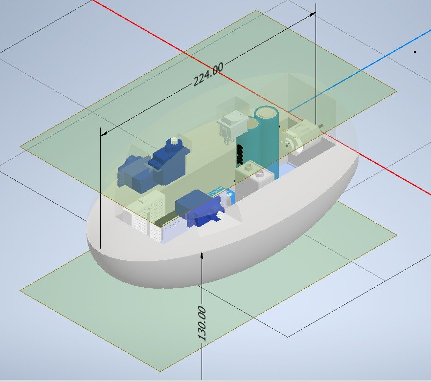
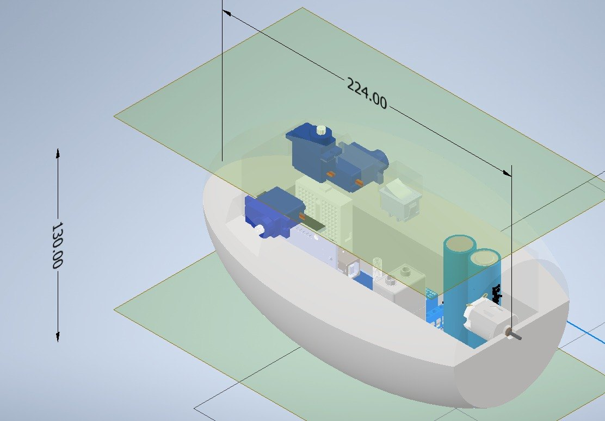
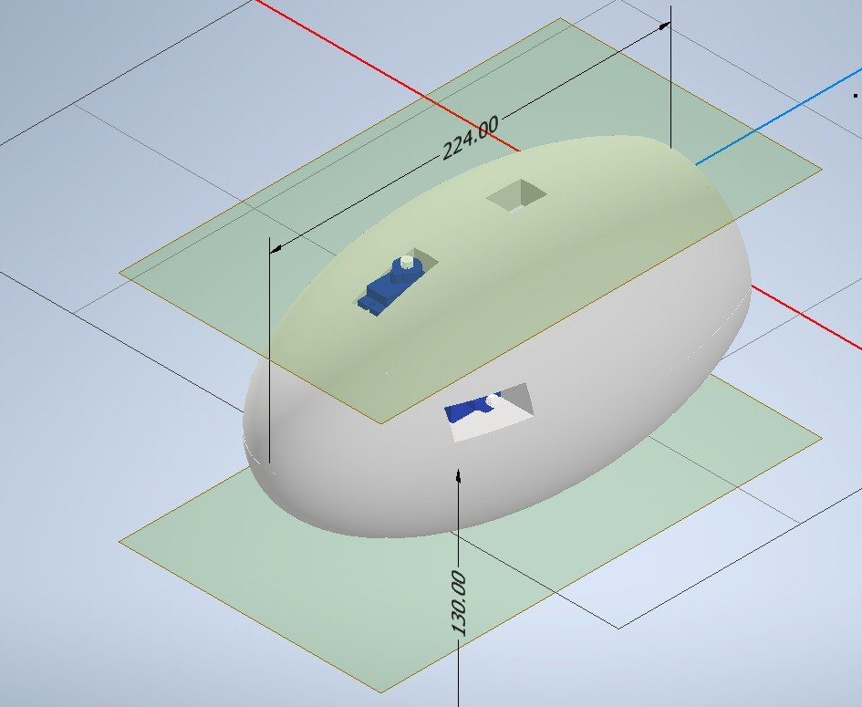
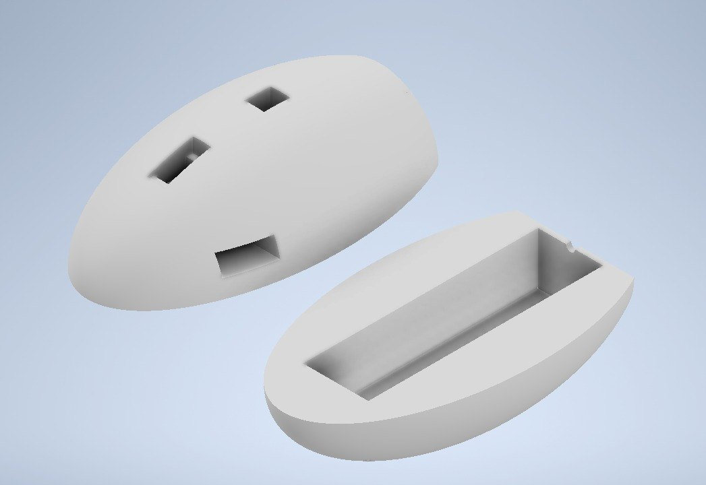
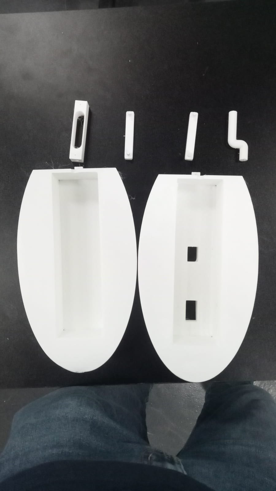
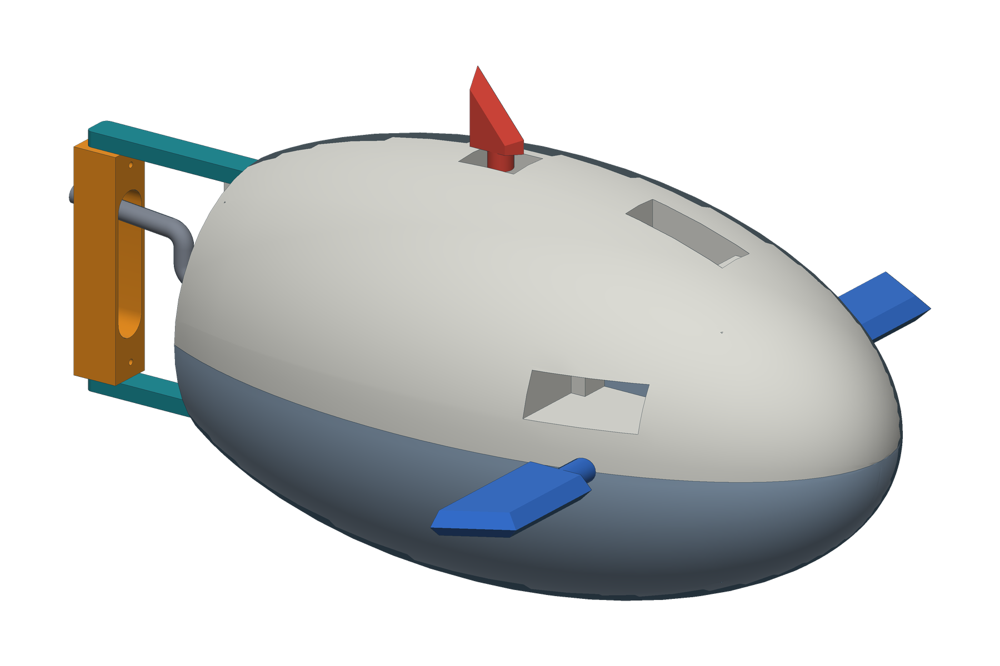

What we built, in order. The newest step is at the bottom.
The ESP32, HC-12 radios, Arduino UNO, relay and servos were wired up on the bench and driven from the Dabble gamepad on a phone.
The fish was redesigned around an egg-shaped body, 224 mm long and 130 mm across, split into two halves. Every electronic part was placed in the model to check that it fits.




Both body halves and the tail parts came off the printer: the slotted yoke, the two link bars and the crank rod.

The tail drive was finalised as a crank and slotted yoke hung on two link bars, and the radio control code was split into an ESP32 transmitter and an UNO receiver with a failsafe.

Fit the electronics into the printed body, seal the joint between the halves, and run the first test in water. We will record swimming speed, turning radius and depth control here.